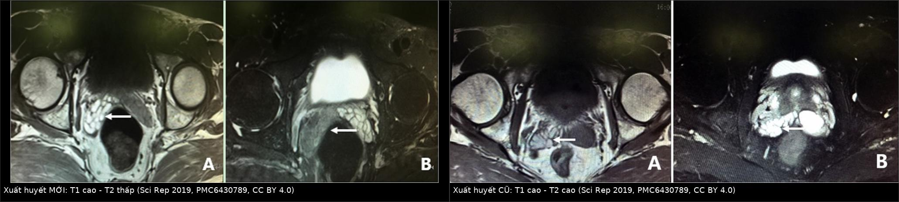
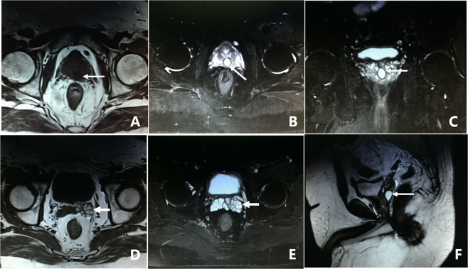
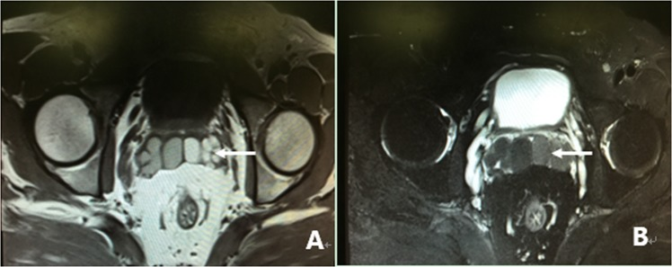

3127 — Chảy máu túi tinh: đọc T1/T2 để phân biệt máu mới – máu cũ – nang – tắc ống phóng tinh
Tags: pattern:xuat-huyet-tui-tinh pattern:nang-duong-phong-tinh pattern:gian-tui-tinh pattern:soi-tui-tinh vung:tien-liet-tuyen vung:tiet-nieu anatomy:tui-tinh anatomy:ong-phong-tinh protocol:TRUS protocol:MRI-tieu-khung
Mức chắc chắn (certainty): tổng hợp y văn (literature synthesis) — ghép một loạt 305 ca chảy máu túi tinh khó trị có MRI + nội soi túi tinh đối chiếu (Scientific Reports 2019, PMC6430789, CC BY 4.0), một loạt 199 ca nguyên nhân chảy máu túi tinh đa trung tâm (Balkan Medical Journal 2025, PMC12060588, CC BY-NC-ND 4.0), một loạt 393 ca tầm soát ung thư ở nam giới chảy máu túi tinh (Current Urology 2022, PMC9132186, CC BY-NC-ND 4.0) và một thuật toán tiếp cận (Turkish Journal of Urology 2022, PMC12482482, CC BY 4.0). Không có ca do nhóm tự chụp.
Câu hỏi thực hành: nam 45 tuổi, ba tháng nay tinh dịch màu nâu đỏ mỗi lần xuất tinh, không đau, không tiểu máu. Siêu âm qua trực tràng thấy hai túi tinh không đối xứng. Câu hỏi: có cần MRI không, và trên MRI phải đo cái gì? Bài chốt ba quyết định: (1) máu mới và máu cũ khác nhau ở T2, không phải ở T1 — T1 luôn cao vì methemoglobin; (2) túi tinh rộng > 1,7 cm hoặc lòng ống trong > 5 mm là dấu tắc ống phóng tinh, không phải "to sinh lý"; (3) nam < 40 tuổi, đợt ngắn, không triệu chứng kèm thì KHÔNG chụp — tổn thương thực thể gần như không gặp, còn nam ≥ 40 hoặc tái phát thì phải có PSA và TRUS trước.
1. Tổng quan bệnh học – cơ chế hình ảnh: vì sao máu trong túi tinh đổi tín hiệu theo thời gian
- Định nghĩa và tần suất: chảy máu túi tinh (hematospermia, hemospermia) là máu trong tinh dịch. Đây là triệu chứng ít gặp nhưng không hiếm: 0,5% nam giới trong một chương trình tầm soát ung thư tuyến tiền liệt, và 1% các triệu chứng niệu khoa trong một thống kê bệnh viện (dẫn trong Scientific Reports 2019, PMC6430789). Phần lớn tự hết trong vài tuần, nhưng thể tái phát/kéo dài > 2 tháng là nhóm phải tìm nguyên nhân thực thể.
- Giải phẫu quyết định hướng máu: 60–70% thể tích tinh dịch do túi tinh tiết ra, phần còn lại từ tuyến tiền liệt và ống phóng tinh. Vì vậy máu từ túi tinh (viêm, nang, sỏi, tăng sinh mạch) là nguồn hay gặp nhất; máu từ niệu đạo sau (u máu hang, giãn mạch) cho bệnh cảnh tiểu máu sau kích thích tình dục; máu từ tuyến tiền liệt (ung thư, sau sinh thiết) thường kèm PSA bất thường.
- TẠI SAO T1 luôn cao: máu thoát ra khỏi mạch → hồng cầu vỡ → methemoglobin (sắt Fe³⁺ thuận từ) rút ngắn thời gian T1 → tín hiệu cao trên T1W ngay từ giai đoạn bán cấp. Đây là lý do T1 cao không phân biệt được máu mới với máu cũ — và cũng là lý do dịch giàu protein/nhầy cũng T1 cao, một cạm bẫy rất hay gặp trong túi tinh.
- TẠI SAO T2 phân biệt được thời gian: máu mới còn deoxyhemoglobin nội bào → hiệu ứng thuận từ làm T2 ngắn → tín hiệu THẤP; khi hồng cầu ly giải, methemoglobin ra ngoài tế bào → T2 dài trở lại → tín hiệu CAO. Vì vậy cặp dấu hiệu kinh điển:
- máu mới: T1 cao – T2 thấp (loạt 305 ca: 26,2%, 80/305, đối chiếu nội soi xác nhận máu tươi);
- máu cũ: T1 cao – T2 cao (35,7%, 109/305, xác nhận máu cũ);
- máu rất cũ/hemosiderin: T1 thấp – T2 thấp (ít gặp, không có trong loạt trên).
- Ngưỡng định lượng trên MRI (dùng để gọi "giãn/tắc"): túi tinh rộng > 1,7 cm hoặc đường kính lòng ống trong > 5 mm được coi là giãn; trong 98 ca giãn của loạt 305, chiều rộng trung bình 2,15 ± 0,36 cm, và nội soi xác nhận tắc ống phóng tinh một bên hoặc hai bên tương ứng.
- Bản đồ tổn thương trên MRI (loạt 305 ca, tất cả đều được nội soi đối chiếu):
| Nhóm dấu hiệu | Tần suất | Chi tiết |
|---|---|---|
| Bất thường tín hiệu túi tinh | 62,0% (189/305) | máu mới 26,2%, máu cũ 35,7% |
| Nang vùng ống phóng tinh | 36,7% (112/305) | nang tuyến tiền liệt 25,6% (78), nang ống Müller 5,9% (18), nang ống phóng tinh 1,6% (5), nang túi tinh 3,6% (11) |
| Giãn/đổi hình thái túi tinh | 32,1% (98/305) | rộng trung bình 2,15 cm, do tắc ống phóng tinh |
| Sỏi/calci hóa túi tinh | 8,5% (26/305) | 0,2 × 0,3 đến 0,5 × 1,0 cm |
| MRI không bất thường | 13,8% (42/305) | nội soi vẫn tìm thấy u máu hang hoặc tắc ống phóng tinh |
- Nguyên nhân theo cơ chế (loạt 199 ca đa trung tâm, PMC12060588): viêm 38,1%; cấy nước tiểu/tinh dịch dương 10% (E. coli 35%, S. aureus 20% trong số dương); ung thư 5,8% — cả 9 ca ung thư đều có tiểu máu kèm theo; > 1 nguyên nhân 25,1%; vô căn 70,4% ở nhóm < 40 tuổi so với 12,2% ở nhóm ≥ 40 tuổi. Theo giải phẫu: bệnh tuyến tiền liệt 40,7%, bệnh túi tinh 6%.
- Nguy cơ ung thư thực tế (loạt 393 ca, PMC9132186): ung thư tuyến tiền liệt 5,3% toàn loạt (21/393), 7,2% ở nam ≥ 40 tuổi (21/292), tuổi trung vị 63 (49–80); mpMRI có tổn thương đáng kể 73,6% (81/110) và dẫn tới 20 ca ung thư; không có tổn thương PI-RADS đáng kể nào ở nam < 40 tuổi. Đây là cơ sở để không chụp tràn lan ở người trẻ.
2. Mẫu hình + chẩn đoán phân biệt theo vị trí (gamut)
- Mẫu hình cốt lõi: máu trong tinh dịch ± đau tầng sinh môn/tiểu khó ± tiểu máu, với một bất thường tín hiệu hoặc cấu trúc trên MRI/TRUS tại túi tinh – ống phóng tinh – tuyến tiền liệt.
- Gamut theo vị trí (quyết định thái độ xử trí):
- Trong lòng túi tinh — xuất huyết mới/cũ: hay gặp nhất, thường tự hết; tái phát nhiều đợt → nội soi túi tinh.
- Vùng ống phóng tinh/trung tâm tuyến tiền liệt — nang: nang tuyến tiền liệt (prostatic utricle cyst, PUC) 0,6 × 0,7 đến 2,0 × 2,3 cm, khu trú trong tuyến tiền liệt; nang ống Müller (Müllerian duct cyst, MDC) 3,4 × 4,5 đến 8,8 × 11,5 cm, vượt bờ sau trên tuyến tiền liệt — hai bệnh khác nhau về kích thước và cách mổ.
- Túi tinh — nang/giãn: nang túi tinh thay cấu trúc tổ ong bằng một hoặc vài khoang, thường kèm bất sản thận cùng bên (hội chứng Zinner); giãn túi tinh do tắc ống phóng tinh.
- Ống phóng tinh — sỏi/calci hóa: 8,5%, hiện chấm tín hiệu trống trong túi tinh hoặc nang cạnh đó.
- Tuyến tiền liệt — ung thư xâm lấn: nam ≥ 40 tuổi, PSA bất thường, tiểu máu kèm theo, tổn thương PI-RADS 4–5 ở vùng nền/ống phóng tinh.
- Niệu đạo sau — u máu hang/giãn mạch: tiểu máu sau kích thích tình dục, MRI/TRUS có thể bình thường; chẩn đoán bằng nội soi niệu đạo.
- Toàn thân/do thuốc: rối loạn đông máu, kháng đông, tăng huyết áp, lao/sán máu — không có tổn thương khu trú nhưng phải hỏi bệnh sử.
- Mẹo nhớ 4 nhóm "máu – nang – giãn – sỏi": mọi ca chảy máu túi tinh khó trị đều rơi vào một trong bốn nhóm này (chiếm 86,2% loạt 305 ca).
3. Bảng so sánh phân biệt (ma trận đối chiếu)
| Thực thể (entity) | Hình ảnh điển hình | Chốt vào (rule-in) | Chốt loại (rule-out) | Gợi ý xác nhận |
|---|---|---|---|---|
| Xuất huyết túi tinh MỚI | T1 cao, T2 THẤP trong lòng túi tinh, một hoặc hai bên | T1 cao + T2 thấp cùng vị trí, không có vỏ nang | T2 cao đồng tín hiệu với nước → không phải máu tươi | Nội soi túi tinh thấy máu đỏ tươi; theo dõi 4–6 tuần |
| Xuất huyết túi tinh CŨ | T1 cao, T2 CAO, có thể có vách mảnh | T1 cao + T2 cao, tái phát nhiều đợt | T1 thấp, T2 thấp → hemosiderin hoặc calci | Nội soi thấy máu nâu; MRI lặp lại sau 3 tháng |
| Nang tuyến tiền liệt (PUC) | Nang đường giữa 0,6–2,3 cm, khu trú trong tuyến tiền liệt, T1 thấp–trung bình, T2 cao | Nang nhỏ, đường giữa, không vượt bờ tuyến tiền liệt, kèm giãn túi tinh cùng bên | Kích thước > 3 cm và vượt bờ sau trên → nghĩ nang ống Müller | Siêu âm qua trực tràng; nội soi qua lỗ nang |
| Nang ống Müller (MDC) | Nang lớn 3,4 × 4,5 đến 8,8 × 11,5 cm, vượt bờ tuyến tiền liệt, T1 có thể cao nếu có máu | Kích thước lớn + vượt bờ sau trên tuyến tiền liệt | Nang nhỏ trong tuyến → PUC | MRI tiểu khung có T2 sagittal; mổ nội soi |
| Nang/giãn túi tinh | Mất cấu trúc tổ ong, khoang đơn hoặc nhiều khoang; rộng > 1,7 cm, lòng ống > 5 mm | Giãn kèm tắc ống phóng tinh cùng bên; nếu kèm bất sản thận cùng bên → Zinner | Túi tinh đối xứng, kích thước bình thường → không phải giãn | Siêu âm thận tìm bất sản; MRI xác nhận |
| Tắc ống phóng tinh (EDO) | Giãn túi tinh hai bên, tín hiệu có thể lẫn máu mới; tinh dịch ít, vô tinh | Túi tinh giãn > 1,7 cm hai bên + thể tích tinh dịch giảm | Túi tinh bình thường hai bên → loại tắc hoàn toàn | Nội soi ống phóng tinh; siêu âm sau xuất tinh |
| Sỏi/calci hóa túi tinh | Chấm tín hiệu trống 0,2–1,0 cm trên mọi chuỗi xung, thường có bóng lưng trên CT | Tín hiệu trống + bóng lưng trong túi tinh/nang | Tín hiệu trống đơn thuần không bóng lưng → khí hoặc mảnh vụn | CT không cản quang; nội soi lấy sỏi |
| Ung thư tuyến tiền liệt xâm lấn | Nốt PI-RADS 4–5 vùng nền, mất vỏ, xâm lấn túi tinh (T3b), DWI cao/ADC thấp | PSA bất thường + tiểu máu + tổn thương vùng nền xâm lấn | PSA bình thường, không ổ nghi ngờ ở nam < 40 → nguy cơ rất thấp | PSA theo tuổi; mpMRI; sinh thiết có định vị |

Trái: máu MỚI — T1 cao (A), T2 thấp (B). Phải: máu CŨ — T1 cao (A), T2 cao (B). Ảnh ghép letterbox từ Scientific Reports 2019 (PMC6430789), CC BY 4.0.Dấu hiệu đọc nhanh trên từng chuỗi xung
- T1W không fat-sat: dấu hiệu nhạy nhất của máu bán cấp; nhưng mỡ quanh túi tinh cũng sáng → luôn đọc kèm T2 và so sánh hai bên.
- T2W lát mỏng: phân biệt máu mới (thấp) với máu cũ/nang (cao); đồng thời thấy vách nang và cấu trúc tổ ong của túi tinh bình thường.
- DWI/ADC: không dùng để chẩn đoán máu; chỉ để đánh giá ổ đặc trong tuyến tiền liệt (ung thư) — máu và nang đều không hạn chế khuếch tán thật.
- DCE: đánh giá u máu hang/giãn mạch ở niệu đạo sau và ổ đặc ở tuyến tiền liệt.
4. Protocol chụp + thuật toán phân tầng
Bước 1 — hỏi bệnh và xét nghiệm (mọi ca): màu, số lượng, thời điểm, số đợt, thuốc kháng đông, chấn thương, du lịch vùng sán máu/lao. Xét nghiệm: tổng phân tích nước tiểu + cấy nước tiểu/tinh dịch; PSA theo tuổi ở nam ≥ 40 tuổi hoặc có yếu tố nguy cơ; đông máu khi tái phát > 2 tháng.
Bước 2 — chọn hình ảnh theo tuổi và triệu chứng (thuật toán PMC12482482):
- < 40 tuổi, ít đợt, không yếu tố nguy cơ, không triệu chứng kèm: không chụp thường quy — xét nghiệm nước tiểu, trấn an và theo dõi. Loạt đa trung tâm cho thấy không ca nào ở nhóm này có bất thường trên hình ảnh (PMC12060588).
- ≥ 40 tuổi HOẶC tái phát HOẶC có yếu tố nguy cơ HOẶC có triệu chứng kèm: PSA + TRUS là cửa đầu; nếu TRUS không giải thích được hoặc nghi tổn thương tuyến tiền liệt → mpMRI.
- TRUS (siêu âm qua trực tràng): đầu dò cao tần, đánh giá kích thước túi tinh, nang, sỏi, ống phóng tinh, thể tích tuyến tiền liệt. Giá trị thực tế: 58,7% ca có bất thường (169/288) trong loạt 393 ca (PMC9132186).
- mpMRI tiểu khung 3T (khi cần): T1W axial (máu), T2W độ phân giải cao axial + coronal + sagittal (nang, vách, tổ ong), DWI b = 1.000–2.000 + ADC, DCE khi nghi u. Bắt buộc đo và ghi: chiều rộng túi tinh (mm), đường kính lòng ống trong (mm), kích thước nang, vị trí nang so với bờ tuyến tiền liệt. Giá trị: 73,6% ca có tổn thương liên quan (81/110) và phát hiện 20 ca ung thư trong loạt trên.
- Nội soi túi tinh (seminal vesiculoscopy): khi tái phát/kéo dài dù hình ảnh không rõ; loạt 305 ca đạt 93,0% hết triệu chứng sau một lần can thiệp (theo dõi trung bình 32,4 ± 23,6 tháng), tái phát 7,0% sau 5–20 tháng.
flowchart TD
A[Chảy máu túi tinh] --> B{Tuổi dưới 40 và ít đợt không triệu chứng kèm}
B -->|Có| C[Xét nghiệm nước tiểu và cấy]
C -->|Bình thường| D[Trấn an và theo dõi]
C -->|Bất thường| E[Điều trị theo nguyên nhân]
B -->|Không| F[PSA theo tuổi và cấy nước tiểu]
F --> G[Siêu âm qua trực tràng TRUS]
G -->|Thấy nang sỏi hoặc giãn| H[Điều trị đặc hiệu]
G -->|Không rõ hoặc nghi u| I[MRI tiểu khung 3T có T1 T2 DWI DCE]
I --> J[Nội soi túi tinh khi tái phát]
5. Biến thể bình thường và cạm bẫy
- T1 cao không đồng nghĩa với máu: dịch túi tinh giàu protein/nhầy cũng T1 cao; phải đọc T2 và đối chiếu hai bên. Túi tinh bất đối xứng nhẹ sau xuất tinh gần đó là bình thường.
- "Không thấy gì trên MRI" không loại trừ: 13,8% ca khó trị có MRI bình thường nhưng nội soi vẫn thấy u máu hang niệu đạo sau hoặc tắc ống phóng tinh (PMC6430789). Đừng kết luận "tâm lý" khi bệnh nhân tái phát nhiều đợt.
- Nhầm nang nhỏ với nang lớn: PUC 0,6–2,3 cm trong tuyến tiền liệt so với MDC 3,4–11,5 cm vượt bờ — quyết định kỹ thuật mổ khác nhau, không được ghi chung là "nang đường giữa".
- Sỏi túi tinh và calci hóa mạch: chấm tín hiệu trống trong túi tinh phải có bóng lưng; calci hóa động mạch cạnh đó không di chuyển theo túi tinh trên các lớp cắt.
- Bỏ sót ung thư ở nam ≥ 40 tuổi: trong loạt 199 ca, cả 9 ca ung thư đều có tiểu máu kèm theo, nhưng chỉ 40,6% ca nhóm ≥ 40 tuổi có triệu chứng kèm — nghĩa là không có tiểu máu không loại trừ, vẫn phải PSA + TRUS theo tuổi.
- Sau xạ trị/xem sinh thiết: chảy máu túi tinh do can thiệp là nguyên nhân thường gặp và tự hết; đừng chụp lại nhiều lần nếu bệnh cảnh phù hợp.
- Thuốc kháng đông/kháng kết tập tiểu cầu: không tự ngừng thuốc chỉ vì chảy máu túi tinh; đánh giá nguy cơ huyết khối trước.
6. Tự lượng giá — Blind Quiz
Ca 1 — Nam 45 tuổi, ba tháng tinh dịch màu nâu đỏ, không đau. Nhìn hai ảnh dưới, mô tả trước khi mở đáp án.
- Gợi ý lâm sàng: không tiểu máu, PSA 0,9 ng/mL, không dùng kháng đông.
- Câu hỏi: Tín hiệu túi tinh hai bên khác nhau thế nào? Đây là máu mới hay máu cũ? Có cần nội soi ngay không?
Bấm để hiện đáp án (findings + chẩn đoán)
- Dấu hiệu: túi tinh phải T1 cao, T2 thấp (mũi tên) so với bên trái — cặp T1 cao/T2 thấp = xuất huyết MỚI; hình còn lại là T1 cao/T2 cao = xuất huyết CŨ.
- Chẩn đoán: xuất huyết túi tinh (thể mới ở ca này) — methemoglobin rút ngắn T1, deoxyhemoglobin còn trong hồng cầu làm ngắn T2.
- Xử trí: nam 45 tuổi đã có PSA và TRUS; theo dõi 4–6 tuần + MRI lặp lại, chỉ nội soi nếu tái phát.
- Nguồn ảnh: Scientific Reports 2019, PMC6430789, CC BY 4.0 (ảnh ghép letterbox).
Ca 2 — Nam 38 tuổi, chảy máu túi tinh tái phát, đau tầng sinh môn khi xuất tinh. TRUS thấy nang nhỏ đường giữa.

- Câu hỏi: Nang nằm ở đâu, kích thước bao nhiêu? Vì sao túi tinh bên trái giãn? Chẩn đoán và bước tiếp theo?
Bấm để hiện đáp án
- Dấu hiệu: nang 1,0 × 1,2 cm đường giữa tuyến tiền liệt, T1 thấp, T2 cao (A–C, F); túi tinh trái giãn tới 2,1 cm, tín hiệu cao cả T1 và T2 (D–E) = máu cũ trong túi tinh giãn.
- Chẩn đoán: nang tuyến tiền liệt (prostatic utricle cyst) gây tắc ống phóng tinh cùng bên và ứ máu túi tinh.
- Xử trí: nội soi bóc vách nang + nội soi túi tinh (fenestration) — trong loạt 305 ca, thủ thuật này chiếm 66,6% và hết triệu chứng 93,0%.
- Nguồn ảnh: Scientific Reports 2019, PMC6430789, CC BY 4.0.
Ca 3 — Nam 52 tuổi, vô tinh, tinh dịch 0,5 mL, không đau.

- Câu hỏi: Hai túi tinh có gì bất thường? Đo gì để chốt tắc ống phóng tinh? Có phải ung thư không?
Bấm để hiện đáp án
- Dấu hiệu: giãn rõ hai bên túi tinh, T1 trung bình–cao (A), T2 thấp (B) = máu mới trong túi tinh giãn; không có ổ đặc trong tuyến tiền liệt.
- Chẩn đoán: tắc ống phóng tinh hai bên (ejaculatory duct obstruction) — ngưỡng gọi giãn: rộng > 1,7 cm hoặc lòng ống trong > 5 mm.
- Không phải ung thư: PSA bình thường, không ổ PI-RADS; xử trí cắt ống phóng tinh qua nội soi (TURED) + nội soi túi tinh.
- Nguồn ảnh: Scientific Reports 2019, PMC6430789, CC BY 4.0.
Bài liên quan chéo
- 3097 – Hội chứng Zinner: nang túi tinh + bất sản thận cùng bên
- 3077 – Áp-xe túi tinh
- 3055 – Áp-xe tuyến tiền liệt
- 158 – PI-RADS: ung thư tuyến tiền liệt trên MRI
- 152 – Sỏi niệu
- 3103 – Rò trực tràng–niệu đạo sau xạ trị tiền liệt tuyến
Ảnh
- Tên file:
3127_chay-mau-tui-tinh_MRI_PMC6430789_F*.jpg(4 ảnh) +composite_xuat-huyet-moi-cu.jpg. Nguồn, giấy phép từng ảnh:images/CREDITS.md.
Không dùng để chẩn đoán độc lập khi chưa có người hướng dẫn.